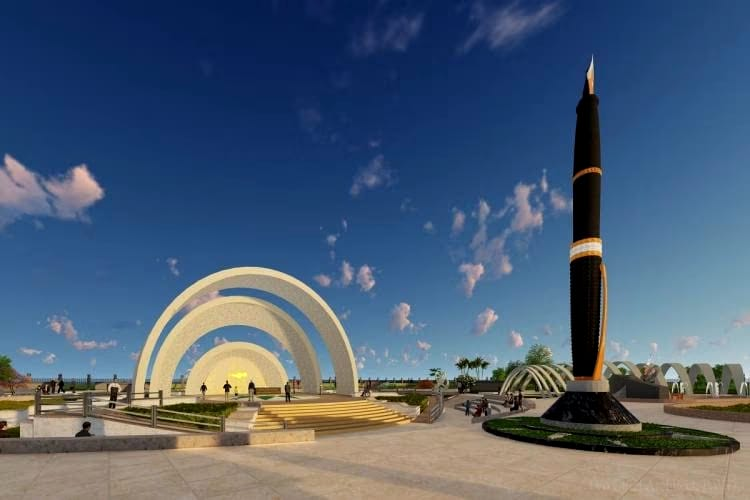

Opinion: EAC clearance for Pen statue in Chennai is despite legal lapses
The Expert Appraisal Committee of the Union Environment Ministry has recommended clearance for the TN government’s proposal for a Pen Monument in the Bay of Bengal off Chennai’s Marina Beach – with an escape clause.

On December 16, 2016, I wrote an article criticising the proposal of the then AIADMK government in Tamil Nadu to bury the late Chief Minister Jayalalithaa on Chennai’s Marina Beach. The article was titled ‘Bury Jayalalithaa on Chennai’s beach – and then bury the rule of law with her.’ On April 17 this year, the Expert Appraisal Committee (Coastal Regulation Zone) of the Union Ministry of Environment did exactly that by recommending clearance for the TN government’s proposal to erect a Pen Monument in memory of former Chief Minister Dr Kalaignar Karunanidhi in the Bay of Bengal off Marina Beach.
The Expert Appraisal Committee’s (EAC) recommendations, however, include an escape clause that exposes the Committee’s misgivings about the TN government’s proposal. Condition (xi) reads: “The project proponents will certify that there is no legal restriction on the proposed project activities at the proposed site.” [Emphasis added]
Project proponents will certify anything to get statutory clearance. Where is the need for appraisal by “experts” if the project proponent’s say-so is sufficient to satisfy regulators of the project’s legality and environmental benignity? Especially when the experts are being compensated at tax-payers’ expense.
CRZ and the project
This project is a beneficiary of a custom-made 2015 amendment to facilitate the construction of a Shivaji statue off the coast of Mumbai. The amendment introduced an exception in the list of prohibited activities pertaining to reclamation: the law now permitted construction of memorials, monuments, and allied facilities, but only in CRZ IV (A) – i.e. the sea – and only in exceptional cases and only by the state government.
“Reclamation for commercial purposes such as shopping and housing complexes, hotels and entertainment activities [except for construction of memorials/ monuments and allied facilities, only in CRZ-IV (A) areas in exceptional cases, by the concerned State Government, on a case to case basis].” [Emphasis added]
The Shivaji statue that necessitated the amendment was designed to be reached by ferry. So no provision was made for allied facilities from shore to sea, traversing CRZ areas – such as IB (intertidal), IA (ecologically sensitive), II (urban) or III (rural) – other than the sea.
The EAC would have to, in order to recommend this proposal, satisfy itself on two counts – one, that no component of the project is located anywhere but in CRZ IV (A) – i.e. the sea – and, two, that this is an ‘exceptional’ case. After assessing this minimum compliance, it would have to go into the merits of the case based on the integrity of the EIA report and the conduct of the public hearing.
The EAC’s recommendation notes that the proposed project “falls under CRZ IA, CRZ II, and CRZ IV-A.” CRZ IA zone is ecologically sensitive – Olive Ridley sea turtle nesting beach, in this case. By encroaching on areas other than the permitted CRZ area, the project fails the test on the first count.
As for the second criteria, neither the project proponents nor the EAC have presented any arguments to show that the project is an exceptional case.
Expert yes-men
The EIA is replete with false statements and undisclosed facts. It may be too much to expect the EAC members to apply their minds to actually critiquing EIAs. But what explains their inaction even after they received letters from fishers and non-fishers alike pointing out these lapses?
The EIA claims that there is no fishing within 360 metres of the shore. Fisherfolk have pointed out that the chosen location of the monument straddles a highly productive ‘kadavadu seru’ – a part of the sea characterised by a muddy ocean floor seasonally nourished by monsoon flood waters brought in by the Cooum river. Not only that, shore and nearshore fishing are common in all tropical waters. Curiously, the EAC has marine biologists among its members who could have detected this falsehood.
On February 20, the Tamil Nadu Pollution Control Board conducted a public hearing that had to be abruptly ended when project supporters – reportedly from the ruling party – disrupted the event by threatening and harassing participants. This too was widely reported.
Chennai fishers wrote to the EAC about the vitiated public hearing and the denial of opportunity for many attendees to present their views on the project. The EAC has not even acknowledged the complaints, let alone explained its basis for setting them aside.
In its defence, it can be said that the EAC has seldom displayed an inclination to speak science to power or uphold the spirit and text of the law. Its ritualistic treatment of due process can be understood, if not condoned. But for a party that swears by Periyar, a rationalist who shunned empty rituals and idol worship, the ruling Dravida Munnetra Kazhagam (DMK) has betrayed the reformer’s legacy by reducing environmental appraisal to a farcical ceremony – all for the sake of an idol of a pen.
Nityanand is a Chennai-based writer and social activist. Views expressed are the author’s own.